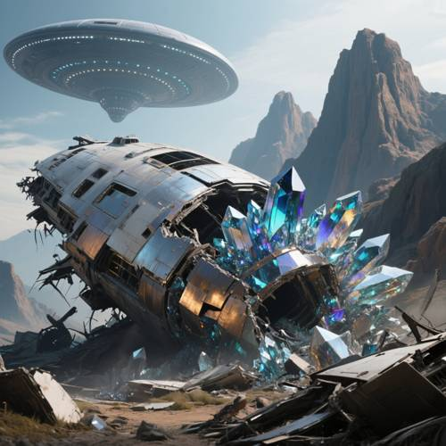
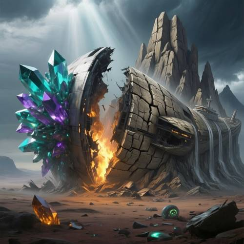
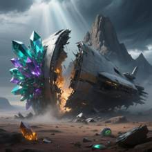
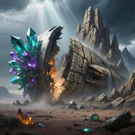

Relationship — The wreckage of a huge alien spacecraft, part of its hull made of exot
The wreckage of a huge alien spacecraft, part of its hull made of exotic metal crystals, and another part blended with ancient rocky mountains.

Direct — one call, no iteration

Continuum — Qwen3.8-27B + Qwen-Image
Judge — Direct
PASSRelationship - Composition — The wreckage of the spacecraft is shown with a significant portion composed of large, multi-colored crystals. These crystals erupt from a break in the metallic hull, and are structurally integrated into the overall mass of the wreckage, appearing as a component part of the damaged craft.
PASSAttribute - Material — The image displays a cluster of large, faceted crystals emerging from the spacecraft. These crystals are translucent and iridescent, with colors ranging from blue and turquoise to purple and gold, which gives them an 'exotic' appearance. They are highly reflective, consistent with a crystalline material that could be interpreted as 'metal crystals' in a sci-fi context.
FAILAction - Contact Interaction — The spacecraft wreckage lies on flat, arid ground in a valley. In the background, there are large, rocky mountains. The wreckage is physically separate from the mountains and is not shown to be blended with or integrated into the rock formations.
Judge — Continuum
PASSRelationship - Composition — A portion of the hull on the left side of the wrecked spacecraft is shown to be made of a large cluster of purple and teal crystals, which are erupting from the metallic structure.
PASSAttribute - Material — The image features prominent, large crystals with faceted surfaces. They appear in exotic colors like vibrant teal, purple, and a glowing orange, consistent with the description of 'exotic crystals'.
PASSAction - Contact Interaction — The right side of the spacecraft is visually integrated with the rocky mountains in the background. The texture of the ship's hull in this area is cracked and stone-like, mimicking the appearance of the mountains, and it appears to be physically embedded within the rock formation.
What the agent did
Thinking
Let's generate the image according to the prompt: "Wreckage of a gigantic alien spacecraft, part of its hull is made of exotic metal crystals, and another part is fused into an ancient, rocky mountain." I should use qwen-image for generation. Let me write a detailed visual prompt: the wreckage of a gigantic alien spacecraft, half of its hull covered in exotic, iridescent metal crystals (glowing, prismatic facets), the other half fused into / embedded in ancient rocky mountains, epic cinematic scene, dramatic lighting, scale, fog, debris, etc. Size: the harness controls the size — the default is 1024x1024. That's fine. Let's generate it.
Step 1 — `generate_image`
{
"model": "qwen-image",
"prompt": "Epic cinematic scene of the wreckage of a huge alien spacecraft crashed on a barren alien plain. The massive hull is split into two distinct halves: one half of the hull is covered in exotic metallic crystals \u2014 large faceted iridescent crystal shards in teal, violet and amber growing out of the metal, glowing faintly from within; the other half of the spacecraft is fused and blended into an ancient rocky mountain range, the hull merging seamlessly into weathered stone, with the mountain rocks becoming ship plating. Enormous scale, the wreck dwarfs the landscape, scattered debris and glowing alien fragments on the ground, drifting mist, dramatic stormy sky with volumetric god rays, moody atmospheric lighting, photorealistic digital matte painting style, highly detailed."
}
Result img_0

Thinking
Let's inspect the result. The image shows the wreckage of a huge alien spacecraft. One half has crystals (teal/purple crystals bursting out), and the other half is… hmm, the right half looks like a regular metal hull with a mountain in the background, but it doesn't really look like it's "fused with an ancient rocky mountain." The prompt asked for "another part fused with an ancient rocky mountain" — the right half of the ship should merge with stone, becoming part of the mountain. In the current image, the ship is next to the mountain, but not fused with it. Also, the crystals are only on the left tip, not covering "part of the hull." This is within the acceptable range — it says "part of the hull is made of exotic metal crystals," and you can see crystals bursting out of the hull. It's decent, but the fusion with the mountain is weak. Let's use inspect_region to look more closely at the junction of the ship and the mountain to check whether they're fused. Actually, let's think about what's good enough. The prompt's main elements: 1. Wreckage of a huge alien spacecraft ✓ (massive, damaged, crashed) 2. Part of the hull is made of exotic metal crystals ✓ (a large crystal cluster growing out of the left hull section — reasonably readable) 3. Another part fused with an ancient rocky mountain ✗ (the mountain is in the background, and the right side of the ship is just metal; no fusion) The third element is missing. I should edit it so that the right half of the spacecraft merges into the ancient rocky mountain — the hull transitions into stone/rock, and the ship becomes part of the mountain. Let me try edit_image with a targeted instruction: "The right half of the spacecraft's hull is fused with the ancient rocky mountain behind it — the metal hull transitions into weathered gray stone, with rock strata continuing as the ship's plating, and the ship becomes part of the mountain's base." This is a structural change, and it might be difficult, but let's try it. First let's check the current image a bit more — the right half is adjacent to the mountain; I want the hull and mountain to be fused. First mark the current one as the best (it's a decent start), then edit. Actually, per the procedure: mark the best as soon as there's something you can submit. img_0 is a fairly good result. Let's mark it, then edit to improve the fusion.
Step 2 — `mark_best`
{
"image": "img_0",
"reason": "Strong first pass: huge crashed alien wreck, crystal-covered hull section, debris, dramatic sky. Only weakness: the mountain is separate background, not blended with the hull."
}
Thinking
Alright, now let's edit it so that the right half of the ship fuses with the ancient rocky mountains. Concrete instructions:
Step 3 — `edit_image`
{
"image": "img_0",
"model": "qwen-image",
"prompt": "Fuse the right half of the spacecraft hull into the ancient rocky mountain behind it: the metal plating gradually transforms into weathered gray-brown stone, rock strata and cracked ancient stone continuing seamlessly as the ship's surface, so the right section of the wreck appears grown out of and merged with the mountain, with stone cliffs rising from and around the hull. Keep the crystal-covered left half, the crash site, debris and sky unchanged."
}
Result img_1

Thinking
In img_1, the right half of the hull has become cracked and stone-like — a stone-textured hull, and there's a rocky cliff in the background. However, "blending with ancient rocky mountains" — the right side of the ship now looks like a petrified / stone-textured hull, but it's still not really "blending with" the mountain. The mountain is still in a separate location in the background. The prompt says "another part blending with ancient rocky mountains" — the stone-textured hull could be interpreted as blending with the ancient rocky mountains... hmm, partially. Let me zoom in and check the details of the right section and the mountain area to see how well they're integrated. Actually, let me think about how much is needed. Interpretation of the prompt: part of the hull is made of exotic metal crystals ✓ (the left crystal cluster is strong). Another part is blending with ancient rocky mountains — the right half is now stone-textured and appears petrified, but it's not actually connected to / merging with the mountain in the background. There's a gap of fog between the ship and the mountain. Options: 1. Accept img_1: the right half has a cracked stone texture and looks like ancient rock — you could say it "blends with the ancient rocky mountains" in a thematic sense, but literally it isn't merged. 2. Do another edit to actually connect the right side of the ship to the mountain: extend the mountain's rock to envelop the right portion of the hull. Let me zoom in and inspect the right half to check the quality of the stone blend and whether there are any artifacts.
In the zoomed view, the right-side hull is covered in cracked ancient stone, looking like petrified rock. It's a good "stone" texture, but the ship is still floating as a separate object with a gap (fog) between it and the mountain. The prompt says "another part fuses with the ancient rocky mountains" — to be more faithful, the right end of the hull should merge into the body of the mountain, i.e., the rock should flow from the mountain into the hull. Let me try another targeted edit: connect the right section of the wreck to the mountain in the background — the stone of the mountain continues down as the hull of the ship, and the two physically merge. Risk: edit_image might change the crystals on the left side or the composition. I'll use a precise delta prompt and refer to img_1 (or the marked best). I'll pass references to preserve the look. Actually, references are for preserving the look of specific features — I can pass img_1 as a reference and instruct it to preserve the crystals and the overall composition. Prompt: "Extend the cliff of the ancient rocky mountain downward and to the left so that its stone physically merges into the right end of the crashed ship — the rock of the mountain continues seamlessly into the stone-textured hull, and the wreck becomes part of the mountain. Remove the gap of fog between the ship and the mountain. Keep everything else identical: the crystals, the fire, the debris, the sky."
Step 5 — `edit_image`
{
"image": "img_1",
"model": "qwen-image",
"references": [
"img_0"
],
"prompt": "Physically connect the right side of the wreck to the mountain: extend the ancient rocky cliff down and around the right section of the ship so the stone flows continuously from the mountain into the hull, the wreck growing out of the mountain's base, no fog gap between ship and mountain. Preserve the crystal-covered left hull section, the glowing fire in the middle, the debris field, and the sky exactly as they are."
}
Result img_3
Thinking
In img_3, the right side of the ship is now connected to the mountain—the rock extends from the mountain base into the hull, and a waterfall is flowing from the ship into the rock. The stone-textured hull section has become part of the mountain. This reads as "another part blending into the ancient rocky mountain." Let me evaluate: 1. Wreckage of a gigantic alien spacecraft ✓—massive, broken, crashing. 2. Part of the hull is made of exotic metallic crystals ✓—a big teal/violet crystal cluster growing from the left side of the hull. 3. Another part blending into the ancient rocky mountain ✓—the right side of the hull is cracked ancient stone, and the mountain's rock now flows into the wreck. The waterfalls might be a slightly new element (they weren't in the prompt), but they fit with an alien ship fusing into a mountain; no harm done. Composition is strong, scale is huge. Minor points: the crystals might be described as "exotic metallic crystals"—they look like glassy/gemstone crystals. "Metallic" is subtle, but acceptable for "exotic." The crystal section reads as a part of the hull being overgrown with crystals; no problem. I think img_3 is a strong final result. Should I mark it as the best and be done? Let me quickly check the seam area where the mountain meets the ship and look for any obvious artifacts.
Zooming in, the stone-textured hull with cracked ancient rock, broken open sections showing glowing interior, and waterfalls flowing down—no obvious artifacts, reads convincingly as a petrified/fused hull. The mountain in the background is connected to the rock of the hull at the top. All elements of the prompt are now in place: 1. Wreckage of a huge alien spacecraft ✓ 2. Part of the hull is made of exotic metal crystals ✓ (left side) 3. Another part is fused into ancient rocky mountains ✓ (stone on the right side fuses into the mountain) img_3 is my best. Mark it as the best and stop.
Step 7 — `mark_best`
{
"image": "img_3",
"reason": "All prompt elements present: huge alien wreck, crystal-covered hull section, and the right hull section now physically fused into the ancient rocky mountain with stone flowing from cliff into plating. Clean seams on inspection."
}
Thinking
Done. The marked image img_3 is the final version. Summarize concisely.
Model
Done. The final image (img_3) shows the wreckage of a huge alien spacecraft with the three elements from your description: - **The wreck itself** — a massive, torn hull split across a desolate plain, glowing fire at the rupture, debris and scattered alien fragments below, dramatic god rays breaking through a stormy sky. - **Exotic metal crystals** — one hull section is encrusted with huge faceted teal and violet crystal shards growing out of the metal, with matching fragments strewn on the ground. - **Blended with ancient rocky mountains** — the other half of the hull is cracked, weathered stone, and the mountain's rock now flows continuously into the wreck, so the ship reads as fused into the ancient cliff (with waterfalls running off it). I verified the fusion seam up close — the stone transitions into the plating cleanly without visible artifacts — and marked it as the best result.